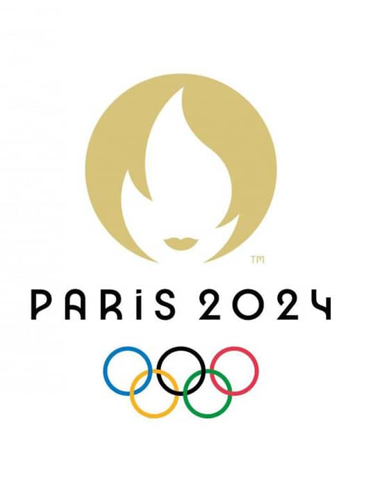

Guillaume Le Page
Data Analyst/PMO
Data Analyst rigoureux et méthodique, je capitalise sur mon expérience professionnelle diversifiée pour transformer les données en insights actionnables. Animé par le souci du détail et la qualité, je recherche un environnement stimulant où mettre à profit mon esprit analytique et mon exigence au service de la réussite collective.
Download CVPortfolio
Analyse de la composition de l'Assemblée Nationale
Objectif
Création d'un dashboard interactif sur Power BI pour analyser la composition de l'Assemblée Nationale française : partis, votes, expérience et âge des députés.
Visualisations principales
- Composition de l'Assemblée par partis politiques
- Votes des députés
- Expérience et âge des élus
- Analyse par parti et par député
Méthodologie
1. Collecte des données issues de data.gouv.fr
2. Web scraping des photos depuis le site de l'Assemblée Nationale
3. Structuration et nettoyage des données sur PowerQuery
4. Création du dashboard Power BI interactif
Technique
- Web scraping : Python + BeautifulSoup
- Data processing : PowerQuery
- Data viz : Power BI
Analyse du chômage en France (1996-2026)
Objectif
Étude approfondie de l'évolution du chômage en France entre 1996 et 2026 pour mieux comprendre les dynamiques du marché du travail français et les profils les plus concernés.
Visualisations principales
- Analyse par territoire (régions, départements)
- Segmentation par âge et sexe
- Analyse par niveau de formation
- Répartition par métier et ancienneté
- Comparaison au niveau européen
Méthodologie
1. Collecte des données depuis statistiques.francetravail.org
2. Nettoyage et structuration avec Power Query
3. Création du dashboard Power BI interactif
Technique
- Source données : statistiques.francetravail.org
- Data processing : Power Query
- Data viz : Power BI
Expériences

CHEF DE PROJET MAINTENANCE
Paris2024 — 2024 (6 mois)Mission au sein de l’équipe maintenance des sites olympiques :
- Pilotage et suivi de 35 personnes travaillant sur les sites olympiques
- Management d’une équipe centrale de 4 personnes
- Supervision de la plateforme Safescore (outil de suivi des demandes d’interventions, des rondes de vérifications, des températures des sites)
- Gestion et administration d’un tableau de bord PowerBI utilisant les données de Safescore et reporting quotidien pour les directeurs de sites
DATA ANALYST
Project Conquerors — 2023/2024 (1,5 ans)Mission au sein d’une équipe d’e-sport sur le jeu League of Legends :
- Extraction, nettoyage et analyse de données avec Python (API/Web scraping)
- Création de rapports (Power BI, LookerStudio, Excel)
- Soutien à la prise de décision des coachs
MAITRE D’OUVRAGE
Vinci Autoroutes — 2022/2024 (1,5 ans)Mission au sein de la Direction de la Maitrise d’Ouvrage sur le Duplex de l’A86 :
- Gestion du Programme de Maintien en Conditions Opérationnelles (PMCO - remplacement de 150 000 équipements)
- Suivi du planning, du budget et des réunions pour le PMCO
- Préparation et présentation du comité d’engagement annuel
- Préparation des phases d’études et suivi des travaux
SECOURISTE
La Croix Blance — 2020/2022 (1,5 ans)Mission de prévention COVID à l’aéroport Charles de Gaulle
PROJECT MANAGER OFFICER
MBDA — 2017/2020 (3 ans)Mission sur un projet de développement de missile (MMP/Aster15) :
- Structuration des projets (WBS, CBS, etc.)
- Gestion de la performance des projets (délais, ressources, coûts)
- Préparation et présentation des Prévisions à Fin d’Affaires biannuel
INGENIEUR PROJET JUNIOR
Renault — 2015/2016 (8 mois)Mission sur un projet de développement d’un nouveau véhicule pour Dacia (Duster) :
- Pilotage de l’avancement du projet (Planning et tableau de bord avec KPI)